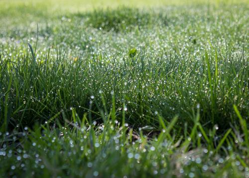
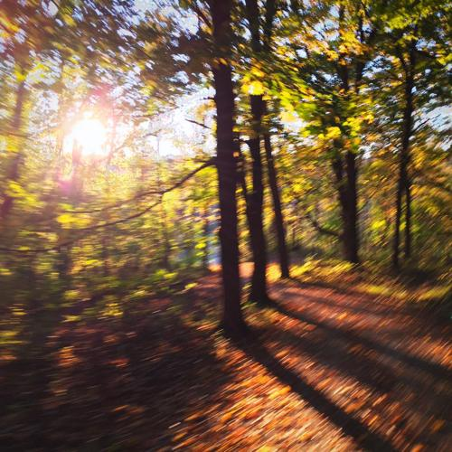
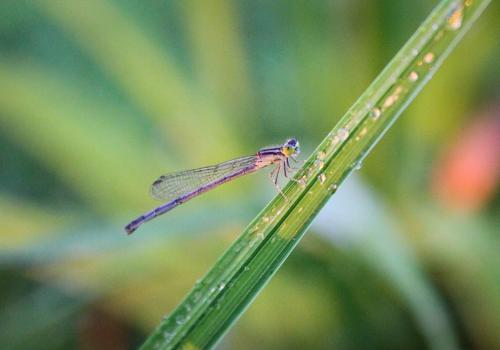

From Creepy-Crawlies to Quasars, Nature Has It All
'There are more trees on Earth than stars in the Milky Way galaxy.'
That fact is so counterintuitive, it blows my mind every time I think about it. But, it's true.

We are so accustomed to think that anything that has to do with Space is so inconceivably large that when an associated provincial fact like this is presented, we instantly discount it. Yes, Space is huge and the numbers describing it are gargantuan, but we take for granted how the Earth is actually a part of 'Space,' and the Earth is no slouch when it comes to size either.
We've been spoiled with connectivity. We've shrunken our planet using technology. Everyone and every thing is only a mouse-click away. What was a life-threatening journey taking many months is now a mere inconvenient couple of hours out of your day crossing an entire continent.
We've lost that appreciation of Homeworld scale with our increasingly domesticated lives. The farthest most of us walk on any given day is an average of around 10,000 steps as shown by our Fitbits and pedometers, and most of that is indoors. We've been inside so long that we forget what is out there. Nature is important, and there's a lot of it.
Looking beyond the obvious reasons why Nature is important — the human need for natural resources, ecosystem preservation for flora and fauna survival, etc. — studying Nature also keeps us in check. It's the same reason why I love astronomy; it puts things into perspective. Studying Nature can show us how interconnected we all are to everything else on this planet and how integral we have become.

Studying Nature isn't only interesting and rewarding, it's applicable and useful. Knowing Nature's patterns enables you to know when to plant your garden, where to fish, which type of tree to use for your project, and can provide interesting conversational topics.
Nature is universally relatable. Who hasn't taken a stroll in a park and mentally regarded a tree or bird with interest and appreciation, even if only for a moment? We love our computer desktop backgrounds of sprawling mountain ranges and ocean vistas for a reason. Even if you're not a 'nature person' and dislike camping and bugs, Nature has flowers to decorate your house or a domesticated puppy for you to fall in love with. Nature is so incredibly vast and dynamic that it is virtually impossible for someone to not find an interesting aspect or perspective of it. From creepy-crawlies to quasars, Nature has it all.
Nature is perennial — it's not going anywhere. Sure, some things in nature last longer than others… butterflies, days; trees, decades; continents, eons; stars and galaxies, billions of years. But this dynamic is what keeps things interesting. With short-lived things we can easily see an entire cycle from life to death; we can get the full picture. With long lasting things it's more difficult to see the complete process, but it's just as rewarding to suss out the details and acquire that much-desired knowledge.
This also means it's relatable over countless generations. From the earliest known cave drawings, through every civilization to today, humans are intrigued, moved, and intricately entwined with nature. From the beginning of time Humankind has been uncovering patterns out of necessity — farming, following herds, foraging for plants, stellar navigation — and simultaneously stalking the lives of insects and animals for the sheer joy and entertainment of it.

We are not separate from Nature, we are Nature. We are one of Nature's creations. We are from the dirt and stardust. Curiosity is an innate human trait. The dirt made us curious. The dirt IS curious. When we study Nature, the Dirt looks back on itself; it can know itself.
By watching the lives of plants and animals, we see what's truly important and notice what really matters. Paying attention to Nature enables us to reflect on our lives through the observation of all other life. Taking the time to slow down is increasingly imperative in today's fast paced world and observing Nature is the perfect opportunity to slow down, think, and appreciate this vast world we are so intimately a part of, yet, so disconnected.
"Nature everywhere speaks to man in a voice familiar to his soul."
— Alexander Von Humboldt